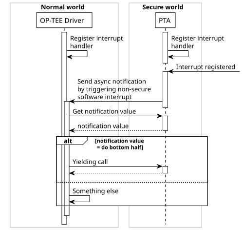
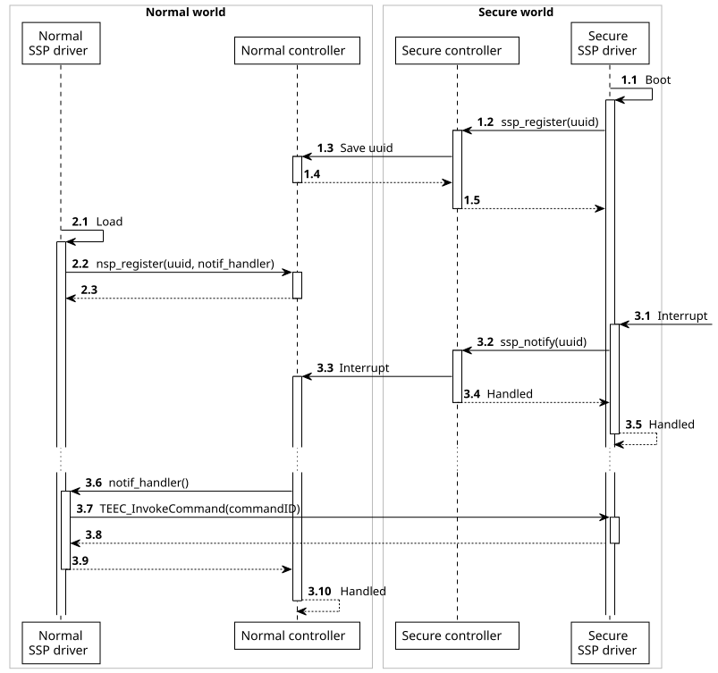

OP-TEE Shared Secure Peripherals
Tom Van Eyck, Hassaan Janjua
1 Setting up & building OP-TEE
1.1 Prerequisites
- Ubuntu 20.04 (only this distribution tested)
- Google AOSP repo
- QEMU
1.1.1 Ubuntu
This guide is based on a clean Ubuntu 20.04 installation on a Hyper-V VM. It should be possible to repeat the results on any Linux distribution and any hypervisor platform, as long as the required packages are available.
At least 60GiB free disk space is required. If the disk is not large enough and the build process is started, the disk will fill, possibly leading to a total system failure without chance of recovery.
The first thing to do when the operating system is installed, is to update the package manager for the right architectures. Run the following in a command line:
sudo dpkg --add-architecture i386
sudo apt updateThen the required packages can be installed:
sudo apt install android-tools-adb android-tools-fastboot autoconf \
automake bc bison build-essential ccache cscope curl device-tree-compiler \
expect flex ftp-upload gdisk iasl libattr1-dev libcap-dev \
libfdt-dev libftdi-dev libglib2.0-dev libgmp-dev libhidapi-dev \
libmpc-dev libncurses5-dev libncursesw5-dev libpixman-1-dev libpython2.7 \
libssl-dev libtool make mtools netcat ninja-build python-crypto \
python3-crypto python-is-python3 python-pyelftools python3-pycryptodome \
python3-pyelftools python3-serial rsync unzip uuid-dev xdg-utils xterm \
xz-utils zlib1g-dev1.1.1.1 Changes from original [2]
- python-serial is not available for Ubuntu 20.04. This package has thus been removed from the install procedure. This should not have any impact, because only python3 is used.
- As python3 is the only python version available on Ubuntu 20.04 (as it should be), a package is added that links
pythontopython3. This might be troublesome on systems where Python 2 is installed and existing tools use Python 2 by callingpython. If this is the case, change these tools to usepython2explicitly.
1.1.2 Google AOSP repo
The repo tool from the Google Android Open Source Project (AOSP) allows you to manage multiple git repositories using manifest files. OP-TEE uses these manifests to combine all projects into a single development environment based on the specific architecture to be used.
Obviously, because repo uses git, git needs to be installed and setup on the system. Configure git with your email and name.
sudo apt install git
git config --global user.email "<email>"
git config --global user.name "<name>"After that, repo can be installed:
mkdir -p ~/bin
PATH="${HOME}/bin:${PATH}"
curl https://storage.googleapis.com/git-repo-downloads/repo > ~/bin/repo
chmod a+rx ~/bin/repoBecause repo is installed in ~/bin, this directory needs to be added to the path. This should already been taken care of by Ubuntu, this can be checked if the following is present in ~/.profile. If not, it should be added to the end of the file.
set path so it includes user's private bin if it exists
if [ -d "$HOME/bin" ] ; then
PATH="$HOME/bin:$PATH"
fi1.1.3 QEMU specific
Next, QEMU should be installed. This can be done by executing
sudo apt install qemu1.2 Building & running OP-TEE
1.2.1 QEMU
1.2.1.1 Download of repositories
OP-TEE uses a central repository containing the manifest files for repo for all architectures. To download all necessary git repositories of the OP-TEE project for the QEMUv7 architecture, execute the following commands:
mkdir -p <project-dir>
cd <project-dir>
repo init -u https://github.com/Distrinet-TACOS/manifest.git -m tacos-qemu.xml
repo sync -j4 --no-clone-bundle1.2.1.2 Toolchains
The toolchains required to build any part of OP-TEE are included in one of the repositories downloaded in the previous step. To download the actual toolchains, execute
cd <project-dir>/build
make -j2 toolchains1.2.1.3 Build OP-TEE
The OP-TEE project has three main parts: the operating system, the client API and the trusted applications. These three parts can be built on their own, but to get started it is easier to build the whole system at once. This is as simple as executing
cd <project-dir>/build
make -j `nproc`This process will take some time.
1.2.1.4 Running OP-TEE
QEMU and OP-TEE can be launched by executing
cd <project-dir>/build
make run -j `nproc`
# After the command prompt (qemu) appears, press c to start execution.
cThis will launch QEMU in the current terminal and two new terminals, one serial connection to the secure world and one to the normal world. In the normal world terminal, you can login using the users rootor test, after which it is possible to run programs in the normal world that interact with the secure world.
To test if everything went according to plan, run xtest once logged in. If there are no obvious errors, the build process should have completed successfully. You can run the example programs by executing any of the optee_example_* programs present in the path.
The command make run-only -j `nproc` is also available to run QEMU without building the project.
1.2.2 Sabre Lite
1.2.2.1 Download of repositories
The i.MX6 build system is based on a customized Buildroot. The TACOS related changes are maintained in a fork of buildroot at central repository. TO initialize the build environment, create a project directory and clone the buildroot into this directory.
mkdir -p <project-dir>
cd <project-dir>
git clone https://github.com/Distrinet-TACOS/buildroot.giti.MX6 specific layer on buildroot called buildroot-external-boundary is provided by boundary devices. TACOS related modifications on this repo are maintained in a forked repository at buildroot-external-boundary repository. Check out this repository in the same project folder as mentioned above.
cd <project-dir>
git clone https://github.com/Distrinet-TACOS/buildroot-external-boundary.git1.2.2.2 Output folder for buildroot
Use the following command to overlay the i.MX6 related configurations, the Board Support Package (BSP), OPTEE configurations and TACOS related configurations on the Buildroot setup. The following command will create a directory named output and place the configurations in this folder.
cd <project-dir>
make BR2_EXTERNAL=$PWD/buildroot-external-boundary/ -C buildroot/ O=$PWD/output nitrogen6x_optee_defconfig1.2.2.3 Build OP-TEE, Linux and the i.MX6 BSP
The simplest way to bootstrap is to issue a make command. This will fetch all the components and build Linux, OPTEE and OPTEE applications. The Linux image is bounded to the OPTEE image and an SD card image is created.
cd <project-dir>/output
make -j `nproc`This process will take some time.
1.2.2.4 Creating a bootable SD Card
The previous process will create an SD card image in the directory ‘
1.2.2.5 Connecting the BD-SL-i.MX6 Serial
The BD-SL-i.MX6 board has two UART connections. The UART connection labled ‘Console’ will be connected to OPTEE while the other UART will be connected to the Linux running in the Normal world. Once the UART cables are connected and their interfaces are attached to separate console windows. Power up the BD-SL-i.MX6 board and you will see boot logs for OPTEE on the UART labeled console and the Linux logs on the other UART. You can now log in to linux and look around or start an example client application available onboard.
1.3 Debugging OP-TEE
To debug OP-TEE, some additional steps need to be taken to prepare everything.
1.3.1 QEMU
1.3.1.1 Download and install gdb for ARM
Normally, if this guide was followed and the toolchains were built accordingly, gdb should already be present in <project-dir>/toolchains. The necessary tools can be added to the path by adding the following in .profile.
if [ -d "<project-dir>/toolchains/aarch32/bin" ] && [ -d "<project-dir>/toolchains/aarch64/bin" ]; then
PATH="<project-dir>/toolchains/aarch32/bin:<project-dir>/toolchains/aarch64/bin:$PATH"
fi1.3.1.2 Gdb settings
To make the initialization of gdb easier, add the following at the end of ~/.gdbinit:
set print pretty on
define optee
handle SIGTRAP noprint nostop pass
symbol-file <project-dir>/optee_os/out/arm/core/tee.elf
target remote localhost:1234
end
document optee
Loads and setup the binary (tee.elf) for OP-TEE and also connects to the QEMU
remote.
end1.3.1.3 Debugging OP-TEE
Because OP-TEE uses Address Space Layout Randomization (ASLR), it is necessary to disable it when starting QEMU. This is done by adding the flag CFG_CORE_ASLR=n.
Open two terminals. One will be the terminal where QEMU will be running, the other will be used to debug using gdb. Like before, execute the following with the added flag, but do not press c!
cd <project-dir>/build
make run CFG_CORE_ASLR=n -j `nproc`Once QEMU is started, start gdb in the second terminal:
cd <project-dir>/toolchains/aarch32/bin
./arm-linux-gnueabihf-gdb -qWhen the gdb prompt appears, run optee to load the symbols and to connect to QEMU. The output below should appear.
optee
> SIGTRAP is used by the debugger.
> Are you sure you want to change it? (y or n) [answered Y; input not from terminal]
> warning: No executable has been specified and target does not support
> determining executable automatically. Try using the "file" command.
> 0x00000000 in ?? ()Then it is possible to refer to the symbols in the OP-TEE p. To demonstrate, let’s set a breakpoint on tee_entry_std(...), an often called function and continue execution. Th
Set breakpoint
b tee_entry_std
> Breakpoint 1 at 0xe1347ce: file core/tee/entry_std.c, line 528.
Resume execution. Breakpoint should be hit.
c
> Continuing.
> [Switching to Thread 1.2]
>
> Thread 2 hit Breakpoint 1, tee_entry_std (arg=0xe300000, num_params=2) at core/tee/entry_std.c:528
> 528 return __tee_entry_std(arg, num_params);Now it is possible to further explore OP-TEE using gdb.
1.4 Custom Pseudo Trusted Application
Trusted Applications (TA) normally run in user mode in the Trusted Execution Environment. They are dynamically loaded when executed. When you want to run p in kernel mode, a Pseudo TA (PTA) is necessary. During compilation, PTA’s are statically linked against the kernel.
It is possible to create a PTA by adding the sources to optee_os/core/pta and including them in the Makefile in the same directory. This way the PTA is included int the os when it is built.
It is then possible to create an application for the normal world that calls this PTA using its UUID and the right parameters, just like a normal TA. This application is created by copying an existing example application from optee_examples and removing the ta subfolder (as there will be no TA compiled separately). The Makefile of the host application should be updated with the right binary name and the build instructions for a TA should be removed from the parent (C)Makefiles.
1.4.1 Example PTA
This example shows a simple PTA that prints some text when called from the normal world. This example is only applicable to a QEMU environment and will thus only be built when QEMU is the target platform.
// File: optee_os/core/pta/testpta.c
#include <kernel/pseudo_ta.h>
#define PTA_NAME "test.pta"
#define PTA_TEST_PRINT_UUID { 0xd4be3f91, 0xc4e1, 0x436c, \
{ 0xb2, 0x92, 0xbf, 0xf5, 0x3e, 0x43, 0x04, 0xd5 } }
#define PTA_TEST_PRINT 0
static TEE_Result test_print(uint32_t type, TEE_Param p[TEE_NUM_PARAMS]) {
IMSG("This is a test of a pseudo trusted application.");
return TEE_SUCCESS;
}
/*
* Trusted Application Etnry Points
*/
static TEE_Result invoke_command(void *session __unused, uint32_t cmd,
uint32_t ptypes,
TEE_Param params[TEE_NUM_PARAMS]) {
switch (cmd) {
case PTA_TEST_PRINT:
return test_print(ptypes, params);
break;
default:
break;
}
return TEE_ERROR_NOT_IMPLEMENTED;
}
pseudo_ta_register(.uuid = PTA_TEST_PRINT_UUID, .name = PTA_NAME,
.flags = PTA_DEFAULT_FLAGS, .invoke_command_entry_point = invoke_command);# Added to optee_os/core/pta/sub.mk
ifeq ($(PLATFORM),vexpress-qemu_virt)
srcs-y += testpta.c
endifThe code for the host application:
// File: host/main.c
/*
* Copyright (c) 2016, Linaro Limited
* All rights reserved.
*
* Redistribution and use in source and binary forms, with or without
* modification, are permitted provided that the following conditions are met:
*
* 1. Redistributions of source code must retain the above copyright notice,
* this list of conditions and the following disclaimer.
*
* 2. Redistributions in binary form must reproduce the above copyright notice,
* this list of conditions and the following disclaimer in the documentation
* and/or other materials provided with the distribution.
*
* THIS SOFTWARE IS PROVIDED BY THE COPYRIGHT HOLDERS AND CONTRIBUTORS "AS IS"
* AND ANY EXPRESS OR IMPLIED WARRANTIES, INCLUDING, BUT NOT LIMITED TO, THE
* IMPLIED WARRANTIES OF MERCHANTABILITY AND FITNESS FOR A PARTICULAR PURPOSE
* ARE DISCLAIMED. IN NO EVENT SHALL THE COPYRIGHT HOLDER OR CONTRIBUTORS BE
* LIABLE FOR ANY DIRECT, INDIRECT, INCIDENTAL, SPECIAL, EXEMPLARY, OR
* CONSEQUENTIAL DAMAGES (INCLUDING, BUT NOT LIMITED TO, PROCUREMENT OF
* SUBSTITUTE GOODS OR SERVICES; LOSS OF USE, DATA, OR PROFITS; OR BUSINESS
* INTERRUPTION) HOWEVER CAUSED AND ON ANY THEORY OF LIABILITY, WHETHER IN
* CONTRACT, STRICT LIABILITY, OR TORT (INCLUDING NEGLIGENCE OR OTHERWISE)
* ARISING IN ANY WAY OUT OF THE USE OF THIS SOFTWARE, EVEN IF ADVISED OF THE
* POSSIBILITY OF SUCH DAMAGE.
*/
#include <err.h>
#include <stdio.h>
#include <string.h>
/* OP-TEE TEE client API (built by optee_client) */
#include <tee_client_api.h>
#define PTA_TEST_PRINT_UUID { 0xd4be3f91, 0xc4e1, 0x436c, \
{ 0xb2, 0x92, 0xbf, 0xf5, 0x3e, 0x43, 0x04, 0xd5 } }
#define PTA_TEST_PRINT 0
int main(void)
{
TEEC_Result res;
TEEC_Context ctx;
TEEC_Session sess;
TEEC_Operation op;
TEEC_UUID uuid = PTA_TEST_PRINT_UUID;
uint32_t err_origin;
/* Initialize a context connecting us to the TEE */
res = TEEC_InitializeContext(NULL, &ctx);
if (res != TEEC_SUCCESS)
errx(1, "TEEC_InitializeContext failed with code 0x%x", res);
/*
* Open a session to the "hello world" TA, the TA will print "hello
* world!" in the log when the session is created.
*/
res = TEEC_OpenSession(&ctx, &sess, &uuid,
TEEC_LOGIN_PUBLIC, NULL, NULL, &err_origin);
if (res != TEEC_SUCCESS)
errx(1, "TEEC_Opensession failed with code 0x%x origin 0x%x",
res, err_origin);
/*
* Execute a function in the TA by invoking it, in this case
* we're incrementing a number.
*
* The value of command ID part and how the parameters are
* interpreted is part of the interface provided by the TA.
*/
/* Clear the TEEC_Operation struct */
memset(&op, 0, sizeof(op));
/*
* Prepare the argument. Pass a value in the first parameter,
* the remaining three parameters are unused.
*/
op.paramTypes = TEEC_PARAM_TYPES(TEEC_NONE, TEEC_NONE,
TEEC_NONE, TEEC_NONE);
/*
* TA_HELLO_WORLD_CMD_INC_VALUE is the actual function in the TA to be
* called.
*/
printf("Invoking PTA to print test.");
res = TEEC_InvokeCommand(&sess, PTA_TEST_PRINT, &op, &err_origin);
if (res != TEEC_SUCCESS)
errx(1, "TEEC_InvokeCommand failed with code 0x%x origin 0x%x",
res, err_origin);
printf("Test printed.");
/*
* We're done with the TA, close the session and
* destroy the context.
*
* The TA will print "Goodbye!" in the log when the
* session is closed.
*/
TEEC_CloseSession(&sess);
TEEC_FinalizeContext(&ctx);
return 0;
}The Makefiles of the new host application:
# File: Makefile
export V?=0
# If _HOST or _TA specific compilers are not specified, then use CROSS_COMPILE
HOST_CROSS_COMPILE ?= $(CROSS_COMPILE)
.PHONY: all
all:
$(MAKE) -C host CROSS_COMPILE="$(HOST_CROSS_COMPILE)" --no-builtin-variables
.PHONY: clean
clean:
$(MAKE) -C host clean# File: host/Makefile
CC ?= $(CROSS_COMPILE)gcc
LD ?= $(CROSS_COMPILE)ld
AR ?= $(CROSS_COMPILE)ar
NM ?= $(CROSS_COMPILE)nm
OBJCOPY ?= $(CROSS_COMPILE)objcopy
OBJDUMP ?= $(CROSS_COMPILE)objdump
READELF ?= $(CROSS_COMPILE)readelf
OBJS = main.o
CFLAGS += -Wall -I../ta/include -I$(TEEC_EXPORT)/include -I./include
#Add/link other required libraries here
LDADD += -lteec -L$(TEEC_EXPORT)/lib
BINARY = optee_example_testpta
.PHONY: all
all: $(BINARY)
$(BINARY): $(OBJS)
$(CC) $(LDFLAGS) -o $@ $< $(LDADD)
.PHONY: clean
clean:
rm -f $(OBJS) $(BINARY)
%.o: %.c
$(CC) $(CFLAGS) -c $< -o $@# File: CMakeLists.txt
project (optee_example_testpta C)
set (SRC host/main.c)
add_executable (${PROJECT_NAME} ${SRC})
target_include_directories(${PROJECT_NAME}
# PRIVATE ta/include
PRIVATE include)
target_link_libraries (${PROJECT_NAME} PRIVATE teec)
install (TARGETS ${PROJECT_NAME} DESTINATION ${CMAKE_INSTALL_BINDIR})# File: Android.mk
###################### optee-testpta ######################
LOCAL_PATH := $(call my-dir)
include $(CLEAR_VARS)
LOCAL_CFLAGS += -DANDROID_BUILD
LOCAL_CFLAGS += -Wall
LOCAL_SRC_FILES += host/main.c
# LOCAL_C_INCLUDES := $(LOCAL_PATH)/ta/include
LOCAL_SHARED_LIBRARIES := libteec
LOCAL_MODULE := optee_example_testpta
LOCAL_VENDOR_MODULE := true
LOCAL_MODULE_TAGS := optional
include $(BUILD_EXECUTABLE)
# include $(LOCAL_PATH)/ta/Android.mk1.5 Serial interrupt in secure world
To accept input on the serial console of the secure world, it is necessary to register an interrupt on that serial console. To do this, two things need to be done: a interrupt handler needs to be defined and the handler must be registered for the interrupt. The console interface might be different for QEMU or Sabre Lite, but the general way of working should be the same.
1.5.1 Interrupt handler
The interrupt handler is defined according to the itr_handler type in <interrupt.h>. This struct needs to be initialized with the interrupt location it (in this case IT_CONSOLE_UART), the flags for the interrupt (ITRF_TRIGGER_LEVEL) and the handler function. This function can accept a parameter that is the itr_handler structure. When defining this struct, it is (probably) necessary to explicitly state that the interrupt handling is put in the right part of the binary. This is done by declaring DECLARE_KEEP_PAGER(console_itr);.
struct itr_handler {
size_t it;
uint32_t flags;
itr_handler_t handler;
void *data;
SLIST_ENTRY(itr_handler) link;
};
static enum itr_return handler_function(struct itr_handler *h)
{
// Handling code
return ITRR_HANDLED;
}
static struct itr_handler handler = {
.it = IT_CONSOLE_UART,
.flags = ITRF_TRIGGER_LEVEL,
.handler = handler_function,
};
DECLARE_KEEP_PAGER(handler);When the interrupt handler is declared and defined, it can be used to enable the interrupt. First, the interrupt handler must be registered and then the interrupt can be enabled. Adding the interrupt handler is done by itr_add(&handler) and enabling the interrupt is done by itr_enable(handler.it).
1.5.2 Serial console driver
To accept input from the serial console during the handling of the interrupt, it is necessary to have access to the console chip and driver. Because the driver is initialized during the boot sequence of the platform, the only way to get this access is by hijacking this process, disabling the standard interrupt enabled by the boot process and call our own function to save the serial console access location.
The original interrupt setup happens in the file optee_os/core/arch/arm/plat-vexpress/main.c. A macro called driver_init(...) is called with the function that enables the serial interrupt. This macro ensures that the interrupt enabling routine is called during the boot process. To prevent this from happening, the simplest solution is to comment out this line.
To save the access location of the console interface, the function console_init(void) in the same file calls a function register_serial_console(...) which is a wrapper for an assign operation. We can imitate this function to do the same for us, by defining our own pointer to the serial chip and using this pointer to access the serial console.
static struct serial_chip *serial_chip;1.5.2.1 Handling serial input
The serial console functions as follows: when data is sent to the serial console (for example by pressing a key in the console), it is accepted by the driver, the data is stored in a buffer and the cpu is notified by means of an interrupt. This interrupt invokes our interrupt handler function.
It is in this function that we are able to retrieve the data from the buffer. The interrupt keeps triggering if the buffer is not empty, thus it is necessary to empty the buffer after getting its contents. The following while loop gets a single character from the buffer and prints it as long as there are characters left in the buffer. It is here that we use the reference to the serial console.
static enum itr_return handler_function(struct itr_handler *h)
{
while (serial_chip->ops->have_rx_data(serial_chip)) {
int ch = serial_chip->ops->getchar(serial_chip);
DMSG("new cpu %zu: got 0x%x", get_core_pos(), ch);
}
return ITRR_HANDLED;
}1.5.3 CPU masks
Each system may have multiple cpus. When assigning an interrupt handler to a certain interrupt and enabling it, this interrupt is assigned to all cpus. This means that when an interrupt happens, both cpus will handle that interrupt, calling the same handler twice leading to undefined behavior.
To prevent this from happening, one can enable cpu masks on an interrupt to define which cpu is responsible for handling that interrupt. This is done by calling the function itr_set_affinity(<interrupt>, <cpu_mask>) with the interrupt from the handler and a cpu mask that is a sequence of bits, where a 1 at position n enables the handling of an interrupt by the cpu with number n.
It is not yet possible to handle interrupts on a cpu selected at interrupt handle time.
2 Design & implementation of a driver for Shared Secure Peripherals
2.1 Shared Secure Peripherals for OP-TEE
Currently, for Trusted Execution Environments (TEE), there exist no drivers that can operate as regular devices (think of character devices in Linux operating systems) and enable interaction between user space applications in the normal world and the TEE subsystem in a transparent fashion. This takes all the technicalities out of the communication with these TEE subsystems. This is useful in the case of writing an adapter between existing applications that are already interacting with interfaces of regular devices and the TEE subsystem, such that the applications do not need to be rewritten.
A Shared Secure Peripheral (SSP) driver for OP-TEE is a driver that consists of two parts: a normal world device with a normal world driver and a secure world driver. These two drivers work together to form a device that is able to react to interrupts in the secure world. It is clear that having such a driver makes it possible for any normal world, user space applications to function normally, without needing refactoring, and interoperate with code running in the secure world. Say a program normally interacts with a serial interface; the handling of the serial interface can be delegated to the secure world and a split driver would act as the serial interface.
2.1.1 Normal world callback on secure world interrupt
Because of the design of TEEs, it is not possible to directly communicate with the normal world from the secure world. It is thus not immediately possible to react to a secure world interrupt in the normal world.
Say that a secure interrupt is registered on a serial interface of the secure world and that this interrupt event is of importance to the normal world and requires special handling there. The interrupt requires the secure world to handle this interrupt with an earlier defined interrupt handler. The Secure Monitor preempts the normal world and starts execution of this handler in the secure world. But how do we notify the normal world of this event?
The normal world is able to communicate with the secure world via well defined channels. This means that threads on the Linux based operating system can easily open communication channels to trusted applications in the secure world. This happens through the well known GlobalPlatform Client API. The normal world can launch calls into the secure world with some kind of argument passing or shared memory, as described in the Client API. In this way, the secure world is able to populate those memory locations with data of use to the normal world.
It is thus possible to approximate communication from the secure world to the normal world by globally saving data or state of the interrupt handler and its results, which can be polled by the normal world. This is however an inefficient solution, as the normal world needs to do constant polling to the secure world, and defeats the purpose of interrupts.
The solution to this problem is a newly developed mechanism, aptly called Asynchronous Notifications. This is a feature that is added to the Linux kernel, but it is still in the middle of the review process. This feature is thus not yet generally available. To check out this feature, you can clone the tacos-qemu-callback.xml manifest file as explained earlier in the Download of repositories section. This section will cover the implementation details of this feature.
2.1.1.1 Feature state
This notification feature is explained in the OP-TEE documentation in the section about asynchronous notifications. It consists of two active RFCs, one on the optee_os repository and on the linaro-swg linux repository. Because the changes to the linux repository are actually changes to the Linux kernel itself, these changes need to be upstreamed to the actual Linux kernel. Although this feature is generally well received by the kernel maintainers, this review process is lengthy, with multiple back and forths between the Linaro developers and the maintainers. It generally takes a few months until the changes are accepted. The changes to optee_os are on hold until the upstreaming process is finished.
2.1.1.2 Using asynchronous notifications
Luckily, the mechanism that is currently being reviewed is in a working state, which means we can pull it in our working copy and use it to our hearts content. The changes have already been applied to our fork of the linux kernel, and can be pulled from git as explained in the introduction of this section.
2.1.1.2.1 Secure world to normal world
The notification to the normal world is achieved through triggering a non-secure interrupt. The triggering of this interrupt is platform specific and done via itr_raise_pi(). This call is wrapped in a function called notif_send_async, which can be called in an interrupt handler in the secure world. An example implementation can be found in optee_os/core/arch/arm/plat-vexpress/main.c. When this non-secure interrupt has been triggered, the Linux kernel in the normal world launches the normal interrupt handling process. At system startup, a handler for this kind of notification interrupt has been registered, so that handler is used.
The hard interrupt handler notif_irq_handler1 of a threaded interrupt with the name optee_notification is registered during the initialization of the kernel. This handler is responsible for deciding what to do with the interrupt thrown, based on the value of the notification. This value is collected by the function called get_async_notif_value. The only value that is currently implemented is OPTEE_SMC_ASYNC_NOTIF_VALUE_DO_BOTTOM_HALF, but the implementation could easily be extended to allow for different notifications.
Because the interrupt handler in the Linux kernel is a threaded interrupt it is also possible to do further handling in the interrupt handler thread called notif_irq_thread_fn. This is the appropriate way to execute more complex interrupt handling that could block the kernel for quite some time.
2.1.1.2.2 Normal world to secure world
On the secure side, a notification driver can be registered, should you want to use the asynchronous notification feature as intended. An example implementation can be found in the file optee_os/core/arch/arm/plat-vexpress/main.c. However, to write some kind of split driver over the two worlds, we are not fully using this feature, but just using half of the communication channel: from the secure to the normal world.
2.1.1.3 Practical overview
The following figure shows the sequence of events defined by the asynchronous notifications feature. The OP-TEE driver is the default driver that manages the TEE and thus OP-TEE OS. This driver always registers an interrupt handler for the asynchronous notifications interrupt line on start up. The PTA also registers an interrupt handler, this time for the external hardware interrupt line.
When this hardware interrupt is caught by the PTA, the PTA saves the notification value 2 and sends an asynchronous notification to the OP-TEE driver by triggering a non-secure software interrupt. This allows the PTA to finish execution before the OP-TEE driver handles the interrupt.
When the OP-TEE driver interrupt handler starts handling the software interrupt, it asks for the notification value using a fast call to the OP-TEE OS. Based on this value the driver may choose to do a multitude of things. In the current implementation state, the only value that is implemented is, as explained before, OPTEE_SMC_ASYNC_NOTIF_VALUE_DO_BOTTOM_HALF, which launches a yielding call into the secure os. This yielding call is possible because the interrupt handler in the driver is a threaded interrupt handler. This threaded interrupt handler is implemented in such a way that the notification value is requested in the hard interrupt context, but the bottom half yielding call is made in the threaded interrupt context. This yielding call can thus be preempted, functionality that is not inherently present in the OP-TEE OS.

2.1.2 SSP driver using callbacks
Given the new feature described in the previous section, it is possible to construct a driver that crosses over the normal and the secure world barrier. We created a pair of drivers, a normal world SSP driver and a secure world SSP driver, that are responsible for providing access to SSPs. The secure SSP driver directly interacts with the SSP hardware, while the normal SSP driver needs to go through the secure driver for their interaction with that hardware. The following figure shows the overview of the architecture of the drivers and the system supporting and provided by its functionality.

This figure also shows that communication from the normal to the secure world is delivered by an existing API (the GlobalPlatform TEE Client API3). This API provides access to TAs running in the secure world based on their identifying UUID, and secured by access control. The normal SSP driver may thus call arbitrary functionality, implemented by the developer of a specific application, of the secure SSP driver. The secure SSP driver may thus also implement some kind of mixer logic if required.
Mixer Logic
Consider a display as a SSP. This display normally shows output of a normal world application, but overlays some output of a secure application (e.g. warnings etc.). In this case the secure SSP driver needs to combine both output buffers in a way that the secure output is always shown on top of the normal output. The logic required for this operation is called mixer logic.
To allow other applications, both on the normal and the secure side, to interact with the hardware as well, both drivers should provide facilities that expose the necessary functionality. In the secure world, the communication with the secure driver happens through the GlobalPlatform Internal Core API4, version 1.1. Mission-critical control software like PLC controllers etc. can thus be separated from the hardware driver and moved to user space.
When the secure world SSP Driver wants to notify the normal world of some event, it cannot use existing APIs, as these only provide a one way communication from the normal to the secure world. This is why we provide a simple and concise package that implements just this functionality. These can be seen in the previous figure as the controller elements. Both the normal and the secure controller provide an API to register drivers to the notification system, nsp_register(uuid, notif_handler) and ssp_register(uuid) respectively. This methods accept an UUID, which is used to uniquely identify each secure application, and nsp_register additionally accepts a handler for incoming notifications. After registering both normal and secure world drivers, the secure SSP driver can notify the normal SSP driver using by calling ssp_notify(uuid). This will internally trigger a hardware interrupt that will be caught by the normal controller, which in turn calls the notification handler of the normal SSP driver. This flow through the system can be seen in the following figure.

2.2 Linux kernel Modules (aka device drivers)
In the section Normal world callback on secure world interrupt a mechanism was explained to notify the normal world of a secure world interrupt. We can now use this mechanism to implement a split driver that is responsible for relaying these secure interrupts in the secure world to a device interface in the normal world. It would then be possible to, for instance, write a normal world application that makes use of standardized device interfaces to interact with systems running in the secure world.
On Linux based operating systems, device drivers are called modules. These modules can be built-in, meaning they are compiled together with the kernel, or loadable at runtime.
2.2.1 Built-in modules
Built-in modules are easy to make. It suffices to include very little code into the drivers directory in the Linux repository. The structure of an archetypical module is as follows, and for each file a hello world example is given.
drivers
+- ...
+- my-module
| +- my-module.c
| +- Makefile
+- ...
+- Makefile// drivers/my-module/my-module.c
#include <linux/module.h>
#include <linux/kernel.h>
#include <linux/init.h>
#define AUTHOR "Hello World author"
#define DESC "Hello World driver"
static int hello_init(void)
{
printk(KERN_ALERT "Hello, world\n");
return 0;
}
static void hello_exit(void)
{
printk(KERN_ALERT "Goodbye, world\n");
}
module_init(hello_init);
module_exit(hello_exit);
MODULE_LICENSE("Dual BSD/GPL");
MODULE_VERSION("v0.1");
MODULE_AUTHOR(AUTHOR);
MODULE_DESCRIPTION(DESC);# drivers/my-module/Makefile
obj-y += my-module.o# drivers/Makefile
...
obj-y += my-module/2.2.2 Loadable kernel modules
Built-in modules are however not very interesting, as these do not allow for speedy development (the whole kernel needs to be compiled every time). Much more interesting are loadable kernel modules. These are separated pieces of code that are compiled against a kernel, making the development cycle much faster. These modules can then be very easily loaded and installed in the kernel during runtime.
It is however very easy to compile the same module code to a standalone loadable module. First, extract all code to a different development directory. Next, the Makefile needs to be changed to call the kernel build system (modules need to be compiled against the Linux kernel). If we are calling make, the environment variable KERNELRELEASE will not be set, and make modules should be called in the Linux source directory with the current working directory set as well. This will again call make in our module’s directory, but now KERNELRELEASE will be set and the kernel build system will be used as described in the previous section.
# If KERNELRELEASE is defined, we've been invoked from the
# kernel build system and can use its language.
ifneq ($(KERNELRELEASE),)
obj-m := my-module.o
# Otherwise we were called directly from the command
# line; invoke the kernel build system.
else
KERNELDIR ?= /lib/modules/$(shell uname -r)/build # or another directory containing the Linux source code
PWD := $(shell pwd)
default:
$(MAKE) -C $(KERNELDIR) M=$(PWD) modules
endifRunning make will generate a module .ko file which can be loaded using insmod. lsmod shows all loaded modules and rmmod removes modules from the system.
2.3 Implementation into OP-TEE OS
As shown in the figures in the previous sections, both loadable kernel modules and pseudo trusted applications are part of the architecture and thus they all need to be compiled. This requires multiple compile commands in different directories. These commands need to be executed in order (for QEMU):
Init repo with the right manifest in the project root directory:
mkdir -p <project-dir> cd <project-dir> repo init -u https://github.com/Distrinet-TACOS/manifest.git -m tacos-qemu-driver.xml repo sync -j4 --no-clone-bundleIn
<project-dir>/build/:make CFG_CORE_ASLR=n GDBSERVER=y -j`nproc`In
<project-dir>/optee_client/:makeIn
<project-dir>/optee_os/:make \ CFG_TEE_BENCHMARK=n \ CFG_TEE_CORE_LOG_LEVEL=3 \ CROSS_COMPILE=arm-linux-gnueabihf- \ CROSS_COMPILE_core=arm-linux-gnueabihf- \ CROSS_COMPILE_ta_arm32=arm-linux-gnueabihf- \ CROSS_COMPILE_ta_arm64=aarch64-linux-gnu- \ DEBUG=1 \ O=out/arm \ PLATFORM=vexpress-qemu_virtIn
<project-dir>/optee_examples/:make \ --no-builtin-variables \ TA_DEV_KIT_DIR=<project-dir>/optee_os/out/arm/export-ta_arm32/ \ CROSS_COMPILE=arm-linux-gnueabihf- \ TEEC_EXPORT=<project-dir>/optee_client/out/export/usr \ PLATFORM=vexpress-qemu_virt \ HOST_CROSS_COMPILE=<project-dir>/toolchains/aarch32/bin/arm-linux-gnueabihf-It might be necessary to first go into specific directories in
<project-dir>/optee_examples/because of module dependencies. The parent modules should thus be build first using the same command.Finally, in
<project-dir>/build/:make run CFG_CORE_ASLR=n GDBSERVER=y -j`nproc`
2.4 References
Based on multiple original sources from the OP-TEE team and others:
[1] “build — OP-TEE documentation documentation,” Readthedocs.io. [Online]. Available: https://optee.readthedocs.io/en/latest/building/gits/build.html. [Accessed: 30-Sep-2021].
[2] “Prerequisites — OP-TEE documentation documentation,” Readthedocs.io. [Online]. Available: https://optee.readthedocs.io/en/latest/building/prerequisites.html. [Accessed: 30-Sep-2021].
[3] “debug.md at master · ForgeRock/optee-build,” Debugging OP-TEE. [Online]. Available: https://github.com/ForgeRock/optee-build. [Accessed: 30-Sep-2021].
[4] A. Rubini, J. Corbet, and G. Kroah-Hartman, Linux Device Drivers, 3rd ed. Sebastopol, CA: O’Reilly Media, 2005.